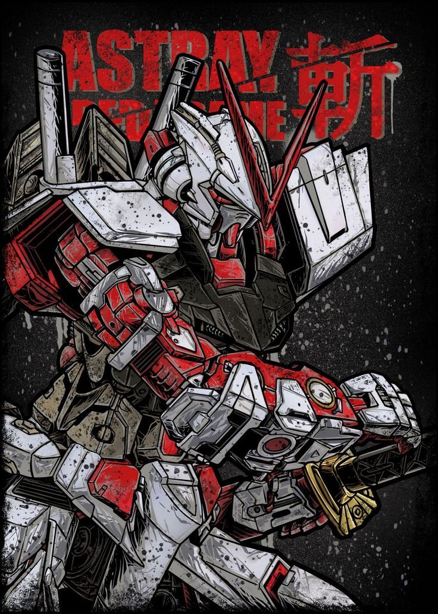
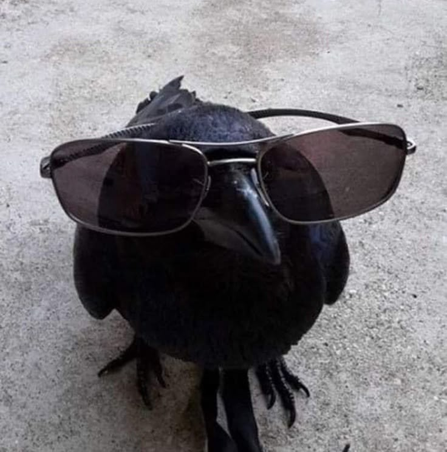

Bachelor of Information Systems (Hons.) Intelligent System Engineering
Mar 2025 – PresentUiTM Merbok, Kedah
Current CGPA: 3.67
I'm a final-year Bachelor of Information Systems (Hons.) Intelligent System Engineering student who enjoys building AI that solves real problems, from an accessibility app powered by Gemini to an IoT system that rates sleep quality.
I'm looking for an AI internship starting March 2027, where I can contribute to real projects and keep learning from an experienced team.
AI & Machine Learning
Web & Design
Hardware & Tools
UiTM Merbok, Kedah
Current CGPA: 3.67
Prosains Sdn Bhd
UiTM Arau, Perlis
CGPA: 3.69 (Vice-Chancellor's Award)
SMK Gombak Setia
SPM: 5A 2B 1C 1D
A mobile app that helps pedestrians navigate their township and report accessibility problems. AI sorts reports by type, and an admin page helps staff handle them faster.
My role:
An IoT and machine learning system that classifies university students' sleep quality (Good / Moderate / Poor) from sensor data, with feedback on a real-time web dashboard. Passed the project viva with no corrections.
A personal AI assistant and companion that runs fully offline on Windows. It can use tools (files, web search, media) and has long-term memory, so it remembers facts and past conversations over time.
Competed in a team of three to design and build an accessibility app for pedestrians over six weeks.
We built BeeAble, where I handled the app design, navigation and Gemini AI integration. See it in Projects →

Ran an AI Game Booth with a partner at the Kedah Digital Festival, teaching children about AI through play.
My role: built Build-A-Slime, a simple web game that shows children how AI optimises step by step to reach the best answer.

Feel free to reach out.
Say Helloameer922004@gmail.com